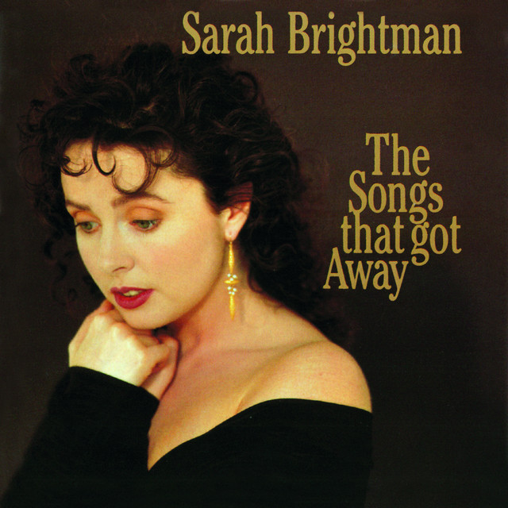
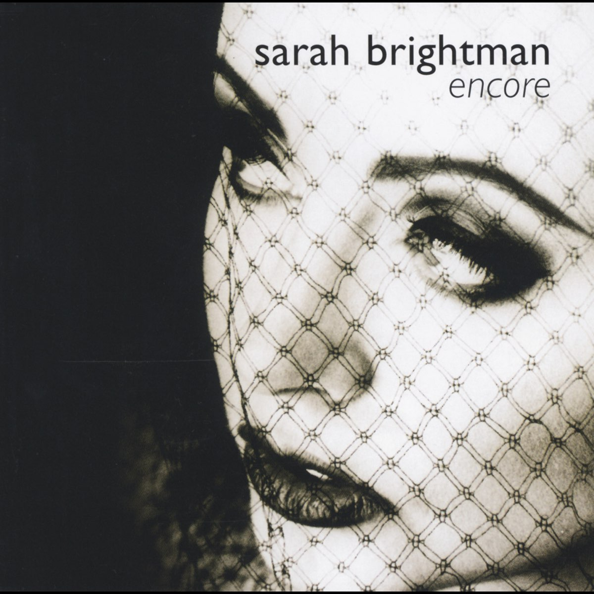

Discografía de Sarah Brightman
The Trees They Grow So High (1988)
- Early One Morning
- Come You Not From Newcastle?
- Sweet Polly Oliver
- The Trees They Grow So High
- The Ash Grove
- O Waly, Waly
- How Sweet the Answer
- The Plough Boy
- Voici le Printemps
- The Last Rose of Summer
- La belle, est au jardin d'amour
- Fileuse
- Dear Harp of My Country!
- Little Sir William
- O Can Ye Sew Cushions?
- Oft in the Stilly Night
- Quand j'étais chez mon père
- There's None to Soothe
- Oliver Cromwell

The Songs That Got Away (1989)
- Meadowlark
- I Am Going to Like It Here
- I Remember
- Mr. Monotony
- Dreamers
- Silent Heart
- Lud's Wedding
- Three-Cornered Tune
- If I Ever Fall in Love Again
- What Makes Me Love Him?
- Chi Il Bel Sogno Di Doretta
- Away from You
- If Love Were All
- Half a Moment
As I Came of Age (1990)
- The River Cried
- Something to Believe In
- As I Came of Age
- Take My Life
- Some Girls
- Brown Eyes
- Love Changes Everything
- Good Morning Starshine
- Alone Again Or
- Yesterday (You Stopped Crying)
- Bowling Green
- It Must Be Tough...to Be That Cool
Sarah Brightman Sings the Music of Andrew Lloyd Webber (1992)
- Don't Cry for Me Argentina
- Another Suitcase in Another Hall
- Everything's Alright
- I Don't Know How to Love Him
- Memory
- Any Dream Will Do
- Anything But Lonely
- Pie Jesu" (feat. Paul Miles-Kingston)
- Love Changes Everything
- Tell Me on a Sunday
- The Phantom of the Opera" (feat. Steve Harley)
- All I Ask of You
- Wishing You Were Somehow Here Again
- The Music of the Night
- Amigos Para Siempre (feat. José Carreras)
Dive (1993)
- Dive
- Captain Nemo
- The Second Element
- Ship of Fools
- Once in a Lifetime
- Cape Horn
- A Salty Dog
- Siren
- Seven Seas
- Johnny Wanna Live
- By Now
- Island
- When It Rains in America
- La Mer
- The Second Element, Pt. 2
Fly (1995)
- Time To Say Goodbye ( Con Te Partiro )
- The Fly
- Why
- Murder in Mairyland Park
- How Can Heaven Love Me
- A Question Of Honour
- Ghost In The Machinery
- You Take My Breath Away
- Something In The Air
- Heaven Is Here
- I Loved You
- Fly
Surrender (1995)
- Surrender
- Unexpected Song
- Chanson d'Enfance
- Tell Me on a Sunday
- Nothing Like You've Ever Known
- Macavity: The Mystery Cat
- Gus: The Theatre Cat (feat. Sir John Gielgud)
- Piano (“Memory”, Italian version)
- Everything's Alright
- The Last Man in My Life
- Pie Jesu" (feat. Paul Miles-Kingston)
- No Llores Por Mi, Argentina" (“Don't Cry for Me Argentina”, Spanish version)
- Guardami (“With One Look”, Italian version)
- There Is More to Love
- Wishing You Were Somehow Here Again
- The Music of the Night
- "Amigos Para Siempre" (feat. José Carreras)
The Andrew Lloyd Webber Collection (1997)
- The Phantom Of The Opera
- Unexpected Song
- Chanson D'enfance
- All I Ask Of You
- Don't Cry For Me Argentina
- Another Suitcase In Another Hall
- Love Changes Everything
- Amigos Para Siempre (Friends For Life)
- Memory
- Gus: The Theatre Cat
- Anything But Lonely
- Macavity: The Mystery Cat
- Tell Me On A Sunday
- Wishing You Were Somehow Here Again
- Pie Jesu
- The Music Of The Night
Time To Say Goodbye (1997)
- Time To Say Goodbye (Con te partirò) with Andrea Bocelli
- No One Like You
- Just Show Me How to Love You with José Cura
- Tú Quieres Volver
- In Pace
- There For Me
- Bilitis-Gènèrique
- Who Wants to Live Forever
- La Wally (Versión del cuarto acto de ópera de Alfredo Catalani)
- Naturaleza Muerta
- En Aranjuez con tu Amor
- In Trutina
- O Mio Babbino Caro
- Alleluja
Eden (1998)
- In Paradisum
- Eden
- So Many Things
- Anytime, Anywhere
- Baïlèro
- Dust in the Wind
- Il Mio Cuore Va
- Deliver Me
- Un Jour Il Viendra
- Nella Fantasia
- Tú
- Lascia ch'io pianga
- Only an Ocean Away
- Scène D'Amour
- Nessun Dorma
- The Last Words You Said (with Richard Marx)
La Luna (2000)
- This Love
- Scarborough Fair
- Figlio Perduto
- La Califfa
- Here With Me
- Serenade
- How Fair This Spot
- Hijo de la Luna
- She Doesn't See Him
- Solo Con Te
- Gloomy Sunday
- La Luna
- First of May
Classics (2001)
- Ave Maria
- La Wally
- Winter Light
- Anytime, Anywhere
- Recuerdos de la Alhambra
- Lascia ch'io pianga
- Dans la Nuit
- Serenade/How Fair This Place
- O Mio Babbino Caro
- La Luna
- Pie Jesu
- Figlio Perduto
- Nessun Dorma
- Baïlèro
- Time To Say Goodbye (Versión en solitario)

Encore (2002)
- Whistle Down The Wind
- Away From You
- Guardami
- Think Of Me
- One More Walk Around The Garden
- Surrender
- If I Ever Fall In Love Again
- Half A Moment
- Piano
- What More Do I Need
- There Is More To Love
- The Last Man In My Life
- In The Mandarin's Orchid Garden
- Nothing Like You've Ever Known
- Chi Il Sogno Di Doretta
Harem (2003)
- Harem
- What a Wonderful World
- It's a Beautiful Day
- What You Never Know
- The Journey Home
- Free
- Mysterious Days
- The War is Over
- Misere Mei
- Beautiful
- Arabian Nights
- Stranger in Paradise
- Until the End of Time
- You Take My Breath Away
- Guéri de Toi (Versión internacional)
- Tout Ce Que Je Sais
- Sarahbande" (Versión japonesa)
- Namida: When Firebirds Cry
- Where Eagles Fly (canción nunca lanzada al mercado, junto Eric Adams de Manowar)
Symphony (2008)
- Gothica
- Fleurs du Mal
- Symphony
- Canto Della Terra with Andrea Bocelli
- Sanvean
- I Will Be with You with Paul Stanley
- Schwere Träume
- Sarai Qui
- Storia D'Amore
- Let It Rain
- Attesa
- Pasión with Fernando Lima
- Running
A Winter Symphony (2008)
- Arrival
- Colder Than Winter
- Ave Maria with Fernando Lima
- Silent Night
- In the Bleak Midwinter
- I've Been This Way Before
- Jesu, Joy of Man's Desiring
- Child in a Manger
- I Wish It Could Be Christmas Everyday
- Amazing Grace
- Ave María (Bach/Gounod)
- I Believe in Father Christmas
Dreamchaser (2013)
- Angel
- One Day Like This
- Glósóli
- Lento E Largo from Symphony N° 3, OP. 36
- B612
- Breathe Me
- Ave Maria
- Éperdu
- A Song of India
- Venus and Mars
- Closer
Hymn (2018)
- Hymn Overture
- Hymn
- Sogni
- Sky and Sand
- Canto Per Noi
- Fly to Paradise
- Gia nel seno (La storia di Lucrezia)
- Follow Me
- You
- Better Is One Day
- Tu Che M'Hai Preso Il Cuor
- Miracle
- Time to Say Goodbye (2018 Version)